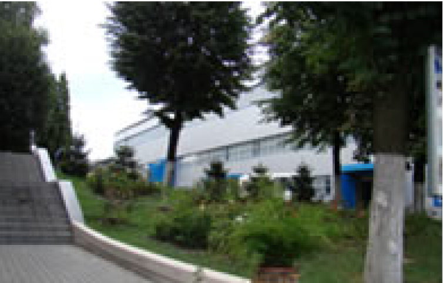

ЧАО «Интеркондиционер» - предприятие новой Украины, является крупнейшим производителем кондиционеров, систем промышленной вентиляции и кондиционирования, дымоудаления, воздушного отопления и выполняет работы по изготовлению промышленного вентиляционного оборудования, его наладке и технического обслуживания.
Тысячи заказчиков в Украине и за рубежом приобретают наше оборудование благодаря высокому качеству, минимальным срокам изготовления, простоте в монтаже и обслуживании.
История и характеристика предприятия
ЧАО «Интеркондиционер» создано в 1996 году, располагается в промышленной зоне крупнейшего индустриального города Украины – Харькова. На площади 1,5 га. построено три современных производственных корпуса и пять зданий для обслуживания, общей площадью более 10000 м2.
Производство кондиционеров, систем промышленной вентиляции и кондиционирования, дымоудаления, воздушного отопленияСовременный дизайн, высокая культура, новейшее прогрессивное оборудование, внедрение системы управления качеством ISO 9001-2001 в 2008г., создание превосходных условий для работников дало возможность выпускать системы промышленной вентиляции, кондиционирования, дымоудаления и воздушного отопления, получивших признание в Украине и за рубежом, отмеченную множеством дипломов и наград. Вся продукция сертифицирована. Наличие мощной производственной и научно-технической базы, современные технологии дают возможность выпускать продукцию, удовлетворяющую запросы монтажных, проектных, строительных организаций и других потребителей всех отраслей народного хозяйства.
